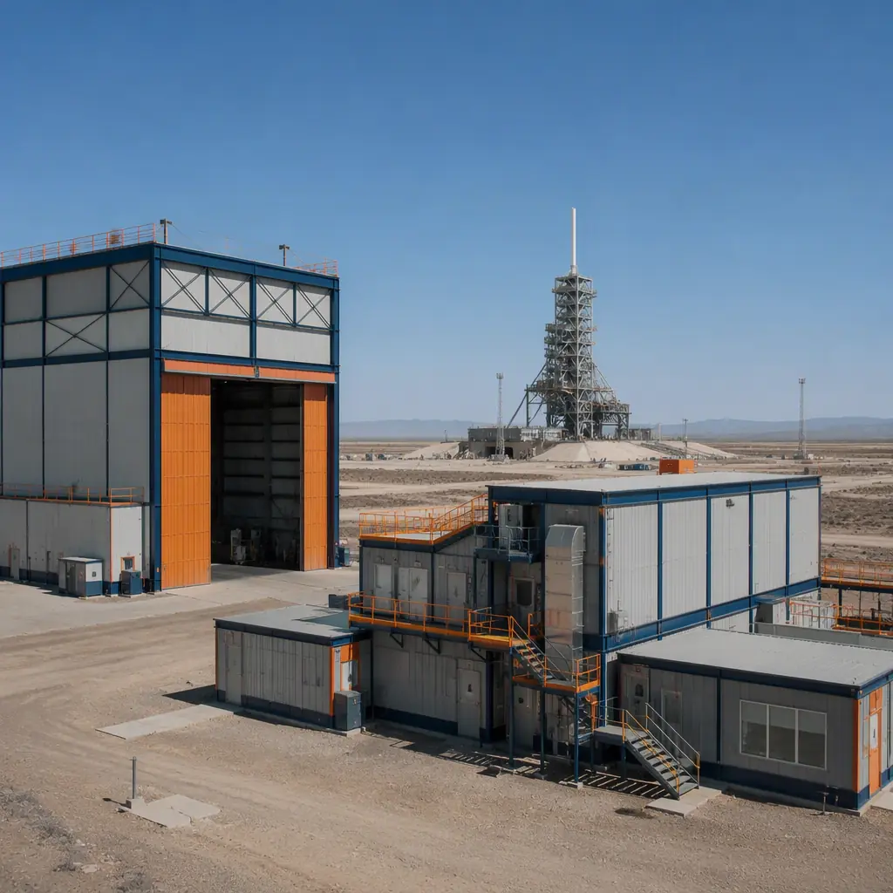
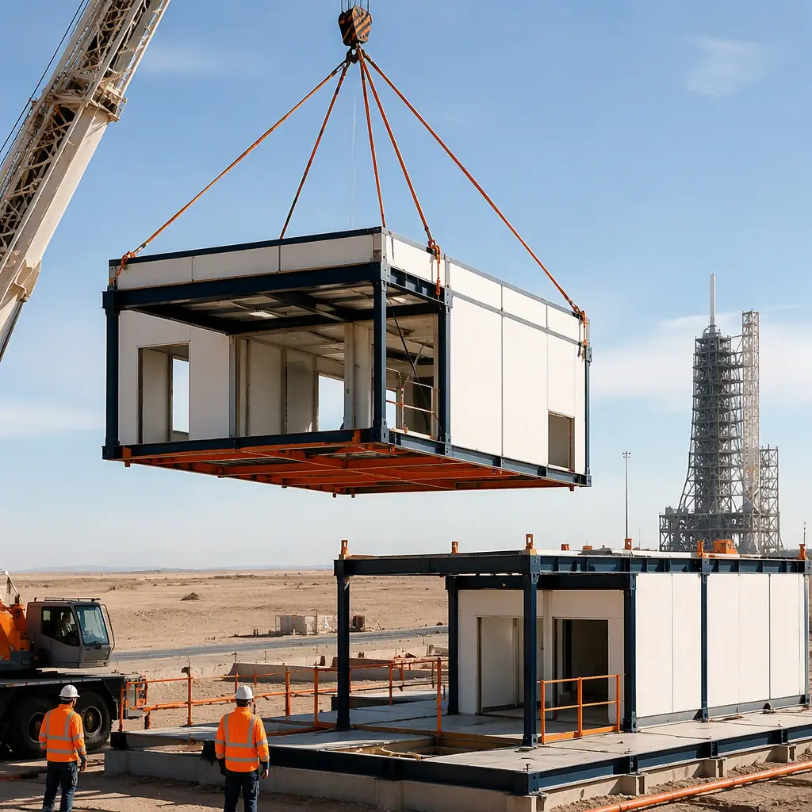
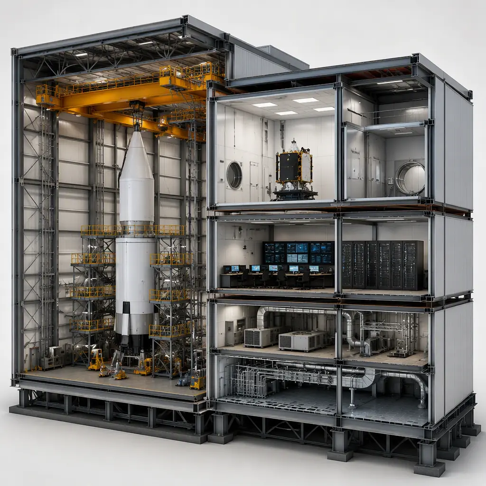
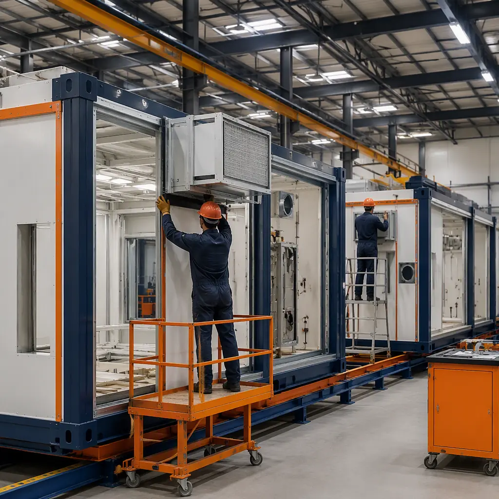

Launch sites occupy the most extreme construction environment in commercial building: remote coastal or desert locations, hard deadlines tied to orbital windows and customer payloads, and buildings whose occupants are million-dollar satellites and cryogenic propellants rather than people. A launch campaign cannot slip because the payload processing facility is not ready — the satellite's owner has booked a launch date, insured the mission, and scheduled the ground network. That schedule pressure, combined with remote-site logistics, makes launch-site support buildings the strongest case in the industry for modular prefabricated construction. A 20,000 sq ft vehicle integration facility, a 10,000 sq ft payload processing cleanroom, an 8,000 sq ft launch control center, and the propellant and hazardous support buildings around them can be designed, manufactured and delivered in 20–30 weeks, then installed in a campaign that does not depend on local construction labor or weather. The same factory-delivery logic we document for modular aircraft hangars and modular clean rooms applies across the spaceport building program. This guide covers the launch-site building program, vehicle integration and assembly facilities, payload processing, launch control centers, propellant and hazardous buildings, hangars and maintenance, staff and mission operations, remote-site logistics, and cost structure.

What a Launch Site Actually Builds
A spaceport is not one building; it is a campus of specialized facilities orchestrated around the launch pad. The vehicle integration facility is the largest: a high-bay building where the rocket is stacked and integrated before rollout to the pad. The payload processing facility is the most sensitive: a cleanroom where satellites are checked out, fueled and encapsulated. The launch control center is the most mission-critical: the building from which the countdown and flight are commanded. Around those three sit propellant and hazardous support buildings, rocket hangars and maintenance facilities, and the staff program of mission operations, offices and crew support. What unifies the program is that nearly every building is a repeatable, code-constrained structure with extreme MEP content — cleanroom air handling, uninterruptible power, hazardous-area ventilation — exactly the building types where factory production delivers the largest quality and schedule advantage. The campus logic follows the precision-enclosure discipline we document for modular substations and electrical buildings and modular data centers, scaled to mission-critical standards.
Vehicle Integration & Assembly Facilities
The integration facility is where the rocket comes together: stages are received, mated, and tested in a high-bay environment with overhead crane capacity, clean conditioned air, and controlled access. Modular delivery suits it because the building is essentially a large clear-span enclosure with demanding MEP — the same high-bay engineering we document for aircraft hangar construction, with the crane capacity and door systems scaled for vertical vehicle assembly. Factory-built modules arrive with the HVAC, electrical distribution and crane support steel installed, so the on-site work shrinks to foundation, module setting and tie-in. For spaceport operators building for a specific vehicle program, the integration facility can be engineered around that vehicle's dimensions from day one — and reconfigured later as the vehicle family evolves, following the flexible-envelope approach in modular building design customization.

Payload Processing Facilities
Payload processing is the most sensitive building program on the site. Satellites are received, checked out, fueled and encapsulated in cleanroom environments that protect them from contamination, electrostatic discharge and humidity — typically ISO Class 5–8 cleanrooms with strict air-change rates and particle control. This is the same precision-environment engineering we document for modular clean rooms for semiconductor facilities, applied to flight hardware. Factory-built cleanroom modules arrive with the air-handling units, HEPA filtration, raised floors and gowning rooms installed and certified, so the facility passes certification on the first attempt rather than after months of on-site commissioning. Because payload schedules are set years in advance, the ability to deliver certified cleanroom capacity on a fixed date is often the deciding factor for the entire spaceport program.
Launch Control Centers & Mission Operations
The launch control center is the building where failure is not an option: mission-critical power, redundant communications, and environmental control for racks of command and telemetry equipment. Modular delivery answers with factory-built, tested enclosures — the same mission-critical discipline we document for modular substations and electrical buildings and modular edge data centers. The control center arrives with UPS and generator-backed power, redundant HVAC, and the network and console infrastructure installed, then ties into the site's utility and communications feeds with a single connection. For operators building multiple launch sites — the pattern of the commercial space industry — the control center becomes a repeatable product: the same validated module design deployed to each site, following the franchise-rollout economics we document in modular franchise and chain rollout construction.

Propellant, Cryogenic & Hazardous Support Buildings
Launch sites handle propellants — RP-1, liquid oxygen, liquid hydrogen, methane — that demand hazardous-area design: classified electrical systems, explosion-rated construction, ventilation and containment, and setback distances from occupied buildings. The support buildings around propellant storage — pump houses, conditioning buildings, valve and control shelters, and hazardous processing enclosures — are among the most code-constrained structures in construction. Factory production is a natural fit because the hazardous-area details — classified electrical installation, blast-resistant walls, dedicated ventilation — are manufactured and tested in the factory rather than improvised on site. The blast and overpressure design follows the engineering framework we document in modular blast-resistant construction, and the fire and life-safety compliance for hazardous occupancies follows our modular construction fire safety guide.
Hangars, Maintenance & Recurring Operations
Between campaigns, launch vehicles and their stages need hangar and maintenance space: horizontal storage, refurbishment bays, and the workshops where hardware is inspected and re-certified. These buildings follow the aircraft hangar program — clear-span bays, heavy-duty floors, bay doors and parts storage — and the modular approach documented in our aircraft hangar guide applies directly. For reusable-vehicle operators, the maintenance facility is a permanent, high-utilization asset rather than a campaign building, which changes the economics: the facility pays for itself through every recovery and refurbishment cycle. Staff facilities, offices and mission operations spaces follow the standards we document for modular office buildings, with the shift-peak design logic of modular workforce housing applied to launch-campaign crews.
Remote-Site Logistics
Spaceports are built where nobody lives: coastal barrier islands, high deserts, and sparsely populated launch ranges. That remoteness is precisely what modular construction neutralizes. Instead of importing construction labor, materials and skilled trades to a remote site for 12–18 months, the owner imports finished, tested buildings that arrive on trucks and are set in weeks — the same logistics advantage that drives modular mining and remote industrial camps. Site foundations are prepared in parallel with factory production, so the remote work is compressed to the minimum. The scheduling and logistics discipline — factory slots, module sequencing, oversized transport permits and crane planning — follows our modular construction scheduling guide, modular crane logistics guide and modular transportation logistics guide. For coastal sites, foundation design follows the guidance in modular foundation systems, and the site-wide coordination of power, data and utility corridors is managed on the digital model we document in modular BIM and digital workflow.
Foundations & the Pad Interface
Launch-site buildings sit on some of the most demanding foundations in construction: coastal sands, desert soils, and sites subject to launch vibration, salt spray and extreme thermal cycling. The foundation strategy — driven piles, grade beams or mat slabs depending on the soil — is designed in parallel with factory production, so the remote site work is complete when the modules arrive. The full foundation design methodology is covered in our modular foundation systems guide. Beyond the foundations, the buildings must interface with pad infrastructure: the integration facility's rollout path to the pad, cable and conduit runs between the control center and the pad, and the pneumatic, hydraulic and propellant lines that cross the campus. Because the interface points are designed and coordinated in the factory model, the site tie-ins are predictable — the same coordination discipline we document in modular BIM and digital workflow, applied to launch infrastructure rather than building services.
Security, Access & Regulatory Compliance
Launch sites operate under regulatory and security frameworks that shape the building program. In the United States, FAA Part 420 licensing governs launch-site safety and requires documented compliance across the facility program; comparable regimes apply in Australia, the UK, Japan and other spacefaring nations. The building response is physical and electronic: restricted-area access control, classified-network server rooms, ballistic-rated entry points, and visitor-processing buildings at the site perimeter. Modular delivery handles the security program the same way it handles the rest of the program — as factory-installed, tested systems — and the zoning and approval sequence is documented in our modular construction permitting guide. For operators who must demonstrate compliance to a regulator on a fixed review calendar, buildings that arrive with their security and life-safety systems certified are a material advantage over conventional construction, where compliance documentation is assembled after the fact.
Cost Structure — Modular vs. Conventional Launch-Site Buildings
| Launch-Site Building Program | Conventional | Modular |
|---|---|---|
| Vehicle integration facility (20,000 sq ft high-bay) | $8–12M / 14–18 months | $6.4–9.6M / 24–30 weeks |
| Payload processing cleanroom (10,000 sq ft, ISO 7) | $6–9M / 12–16 months | $4.8–7.2M / 20–26 weeks |
| Launch control center (8,000 sq ft, mission-critical) | $3.5–5.2M / 10–14 months | $2.8–4.2M / 18–22 weeks |
| Propellant & hazardous support buildings (12,000 sq ft) | $4.5–6.7M / 12–16 months | $3.6–5.4M / 20–26 weeks |
The 15–20% capital saving matters, but the decisive number for spaceports is the campaign date: facilities certified and ready when the payload and vehicle schedules demand them, not a year later. For the full cost methodology, see our 2026 modular construction cost guide.

Is Modular Right for Your Launch Site?
Modular delivery creates the strongest value for new spaceports racing a first-launch date, established ranges adding payload or integration capacity, operators building multiple sites with a repeatable building program, and any program where certified cleanroom or mission-critical capacity must be ready on a fixed date. For campaign-specific capacity — temporary payload processing, event buildings or crew surge quarters — the same modules can be deployed, relocated and stored between campaigns, following the approach in modular temporary and relocatable facilities. The expansion logic for growing sites is documented in modular additions and expansions.
Planning a launch site or spaceport facility program? Request our mission-facility documentation package — integration and payload module specifications, cleanroom certification data and campaign-date installation schedules. Contact the MODURA engineering team.